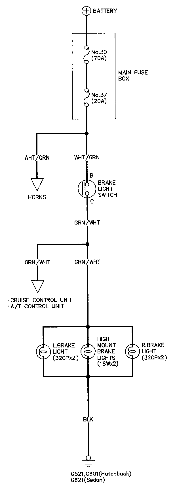
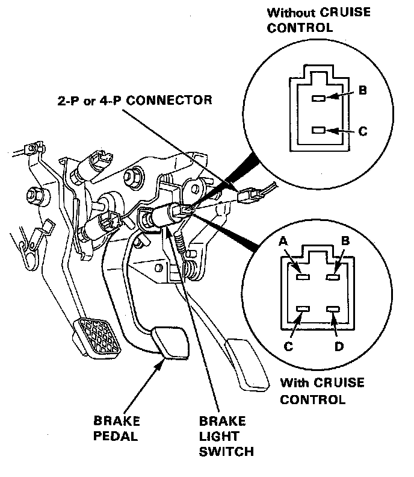

Brake Light Switch: Testing and Inspection


Brake Light Test
1. If the brake lights do not go on, check the No.37 (20A) fuse in the main fuse box, and the brake light bulbs in the taillight assembly and the high mount brake light.
2. If the fuse and bulbs are OK, disconnect the 2-P or 4-P connector from the brake light switch.
3. Check for continuity between the B and C terminals. There should be continuity with the brake pedal pushed.
- If no continuity, replace the switch or adjust pedal height.
- If there is continuity, but the brake lights do not go on:
- Poor ground.
- Hatchback: G521; G601
- Sedan : G621
- An open is the WHT/GRN or ORN/WHT wire.